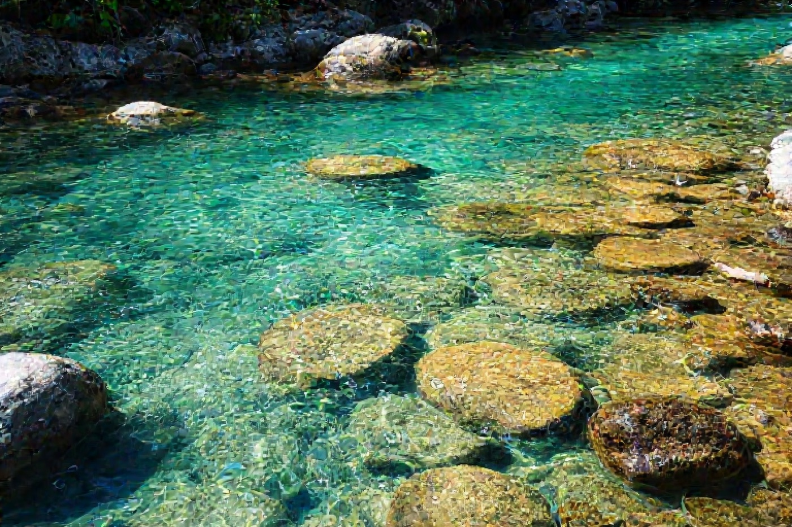
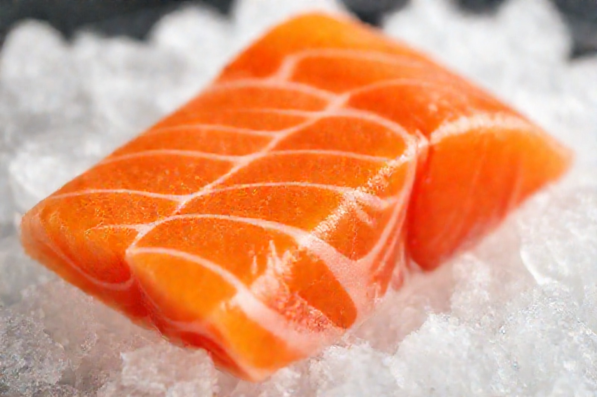
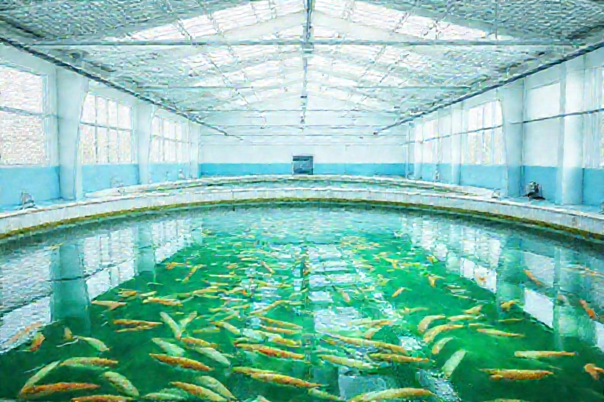
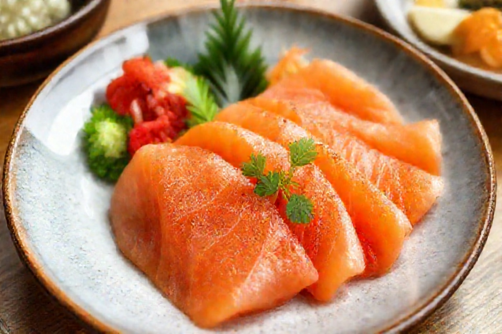
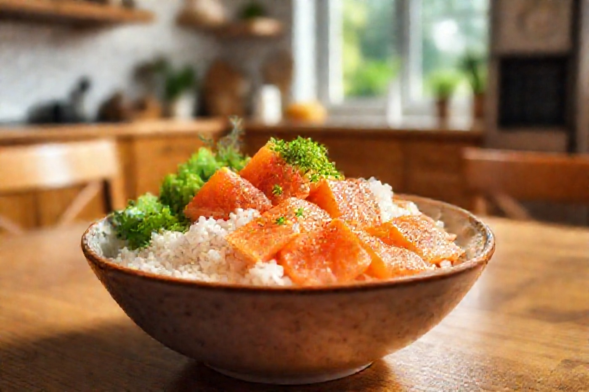

01きれいな水だから、生で安心
管理された伏流水で陸上養殖。寄生虫（アニサキス）の心配がなく、刺身で安心して味わえます。

磐梯山の伏流水・陸上養殖
〆てから48時間以内に、食卓へ。
きれいな水で育てたから臭みがなく、寄生虫の心配もなく、刺身でおいしい。
解凍もので生臭さが気になる
養殖の薬・抗生物質が心配
生食はアニサキスが怖い
磐梯サーモンが選ばれる理由

管理された伏流水で陸上養殖。寄生虫（アニサキス）の心配がなく、刺身で安心して味わえます。

水質を24時間コンピュータ管理。泥臭さのない、すっきりと澄んだ甘みのある身に育ちます。
閉じた清潔な環境で育てるため、抗生物質やワクチンに頼りません。お子様にも安心です。
0.0
平均評価（327件）
0%
「また買う」
0時間
〆てから食卓まで
0
抗生物質

おいしい食べ方

お客様の声
★★★★★
「本当に臭みがない。子どもが“このサーモン一番好き”と。刺身で安心して出せるのが嬉しいです。」
40代・女性
★★★★★
「身が締まっていて甘い。お歳暮に贈ったら親戚に大好評でした。ギフトのし対応も助かりました。」
50代・男性
★★★★☆
「定期便にしています。冷凍でも解凍後がきれい。届くのが毎回楽しみです。」
30代・女性
ご注文シミュレーター
数量・お届け方法・お届け先を選ぶと、送料込みの金額がその場で出ます。
1. 商品と数量
2. お届け方法
3. お届け先
よくある質問
はい。管理された伏流水の陸上養殖で寄生虫の心配がなく、生食用として発送します。お刺身でお楽しみください。
冷蔵便は到着後2〜3日、冷凍便は約1か月が目安です。詳細は同梱の説明書きをご確認ください（デモ表記）。
商品・時期により異なります。冷凍でも解凍後の身くずれが少ないよう瞬間凍結しています。
はい。ギフトセットはのし・メッセージに対応します（ご注文時に選択）。
いつでも変更・停止できます。回数の縛りはありません。
¥12,000以上 送料無料 ／ ギフトのし対応
寄生虫の心配のない、生で食べられる磐梯サーモン。まずはお試し柵から。
購入手続きへ（デモ）※これは架空のデモLPです。実際の販売は行っていません。